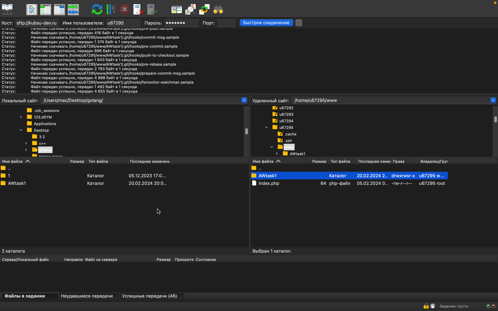

Скриншот получения IP-адреса kubsu.ru с помощью команды ping

Скриншот получения A-записи и MX-записи домена kubsu.ru и kubsu-dev.ru

Скриншот получения даты регистрации домена kubsu.ru и kubsu-dev.ru

Скриншот клонирования репозитория с github на сервер kubsu-dev.ru

С помощью программы FileZilla SFTP соединиться с учебным сервером с вашим логином и паролем по протоколу SFTP и скопировать на
локальный компьютер файлы задания из каталога www.